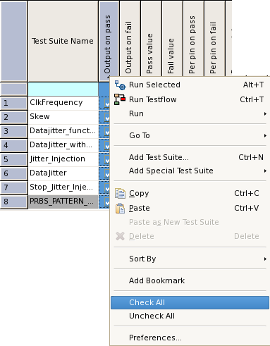

Test suite flags for data logging  These test suite flags are relevant for data logging: ffc_enable mx_waves_enable output_on_fail output_on_pass value_on_failr value_on_pass per_pin_on_fail per_pin_on_pass override_test_number Related informationTest Suites pageData logging profile rule syntax Functional changesIntroduced before SmarTest 6.3.2